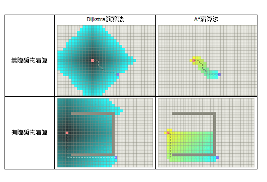

A*(A-Star) 是一種知名的演算法，在遊戲中通常被應用在尋找最短路徑。
在介紹 A* 演算法之前，必須先稍微提一下另一個知名的演算法，Dijkstra 演算法。
Dijkstra 演算法可以保證找到最短路徑，但在演算效能上卻沒有 A* 來的快速，A* 也就是因為考慮到 Dijkstra 的演算速度而進行改良的一種演算法。
接下來先來看一下 Dijkstra 演算法與 A* 演算法兩者的差異：

( 圖片取自 http://truth.bahamut.com.tw/s01/201407/0a347bef88be0867a7489f860b9876b5.PNG )
先不考慮兩者的演算方式，讀者們看到比較圖後會發現Dijkstra演算法的演算深度(有顏色的方格數)與A*演算法的演算深度兩者的差別，雖然A*的演算深度不如Dijkstra演算法，但其結果與效能是令人滿意的。
A*演算法能達到這樣令人滿意的結果，是因為它採用了一套特殊評價公式（Heuristic Estimate），這個公式避免了一些不必要的路徑排除，所以能用較高的演算效率計算出一條最佳結果。
Heuristic Estimate的公式如下：
F(n) = G(n) + H(n)
n：目前節點
G(n)：從起始點到目前節點實際移動的距離
H(n)：目前節點到終點的估算值
F(n)：目前節點的評價分數總和
A*演算法的虛擬程式碼如下：
Add StartNode to OpenList
while OpenList is not empty
get the first node n form the OpenList
remove node n from the OpenList
add node to CloseList
if n is EndNode
return the path
get neighbors of node n and count cost
if neighbors is not in OpenList
add it to OpenList
else
if the cost of G is smaller than old one
update the cost value of G
end whileA* 演算法系列文章連結
A* Algorithm Node Definition – 定義 Node
A* Algorithm Node Sort – Node 排序實作
A* Algorithm Node Generate – 生成 Node、Node 可視化
A* Algorithm Implement – 虛擬程式碼實例化
A* Algorithm Achievement – 演算法實作成果
A* Algorithm Obstacle Detection – 障礙物判定
A* Algorithm Eight Ways – 斜向方向優化
A* Algorithm Line of Sight – 可視點優化